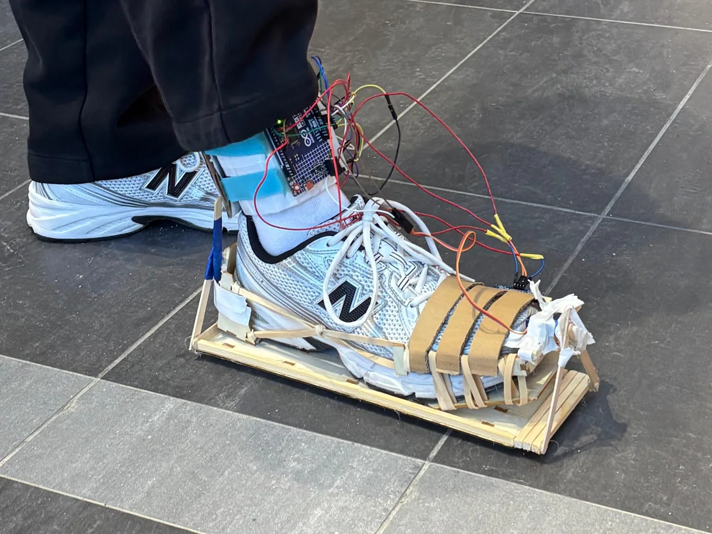
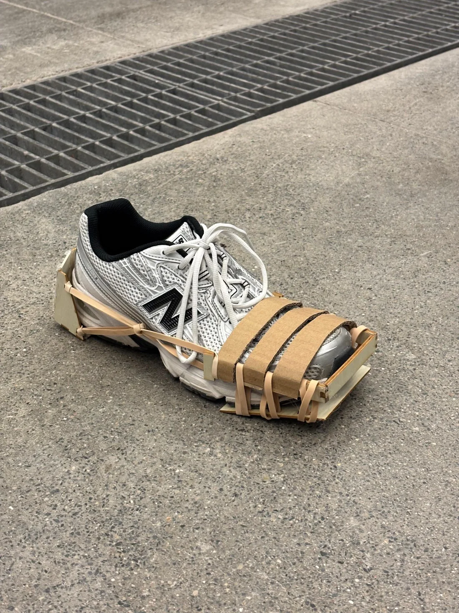
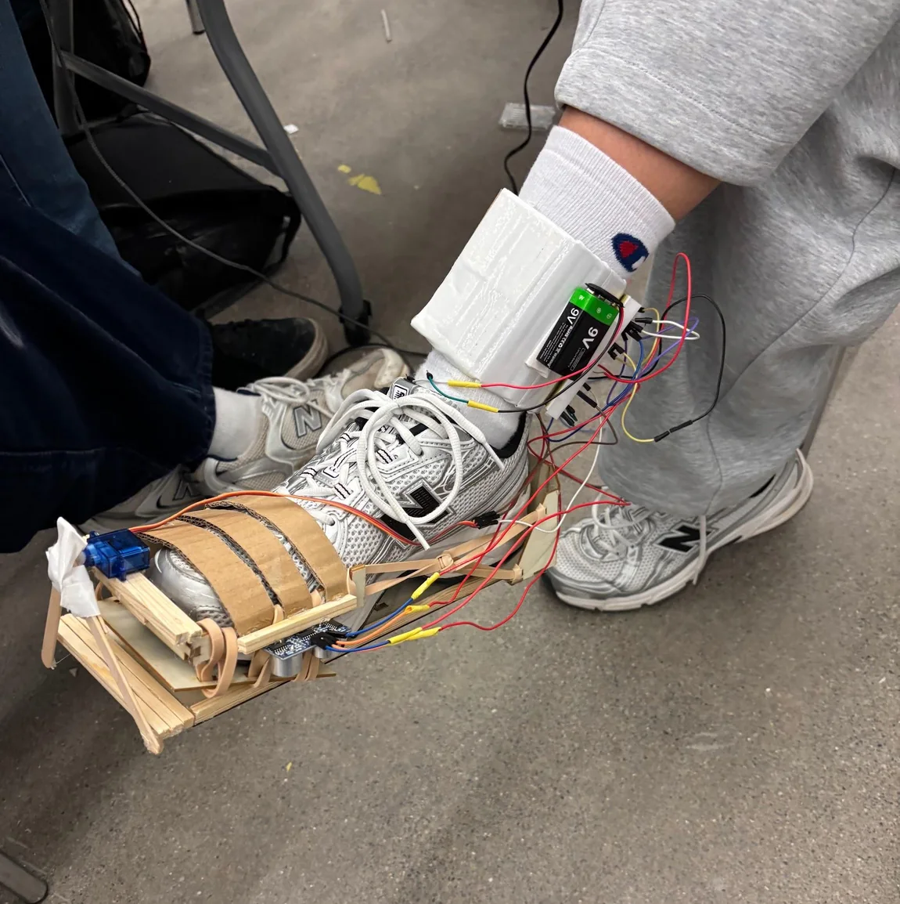
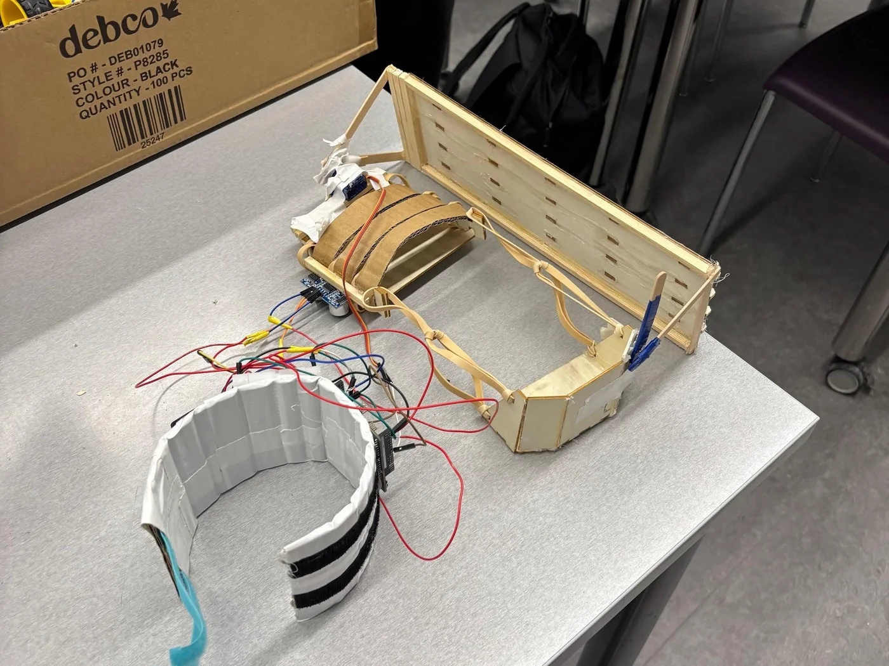

Objective
AutoCleat is a shoe attachment that automatically deploys ice spikes when winter surfaces become unsafe. It was designed to solve the awkwardness of traditional cleats, which work outdoors but become inconvenient or damaging when walking indoors.
AutoCleat was built in 24 hours as a submission to the Waterloo Enghacks Hackathon.



The prototype uses temperature sensing to detect icy conditions and an ultrasonic foot-lift sensor to deploy TPU spikes only when the foot is raised. The spikes retract on safe surfaces, giving the user hands-free traction control without stopping, bending down, or manually switching modes.